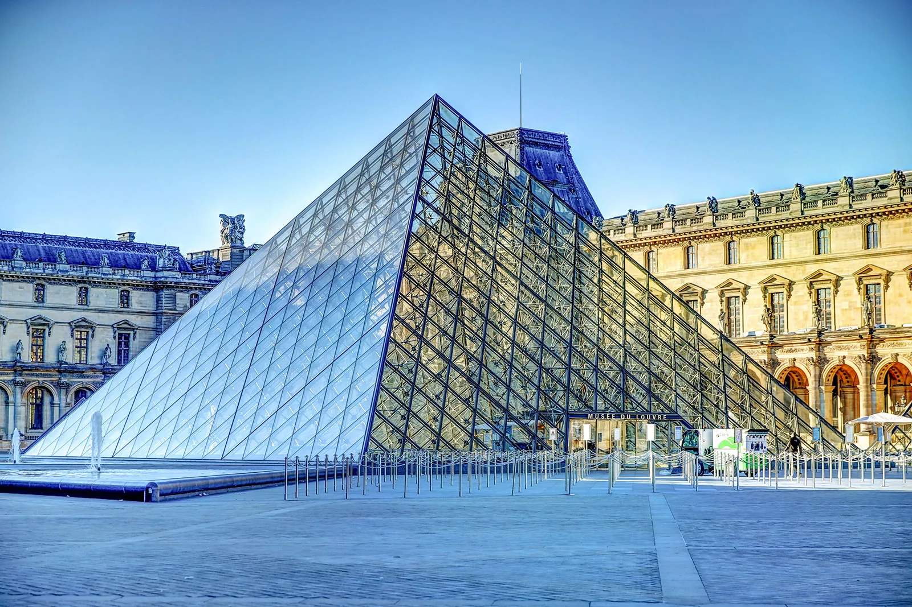
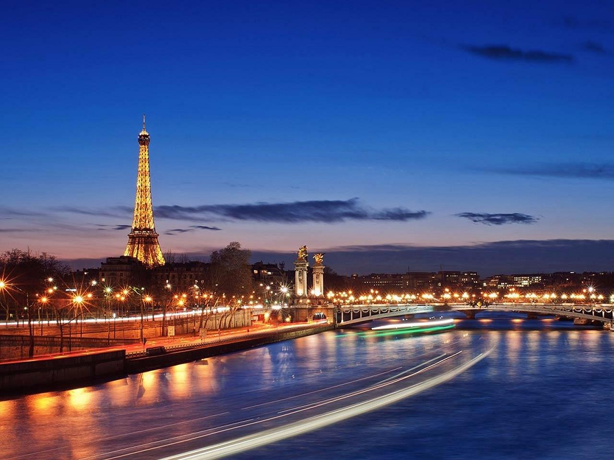
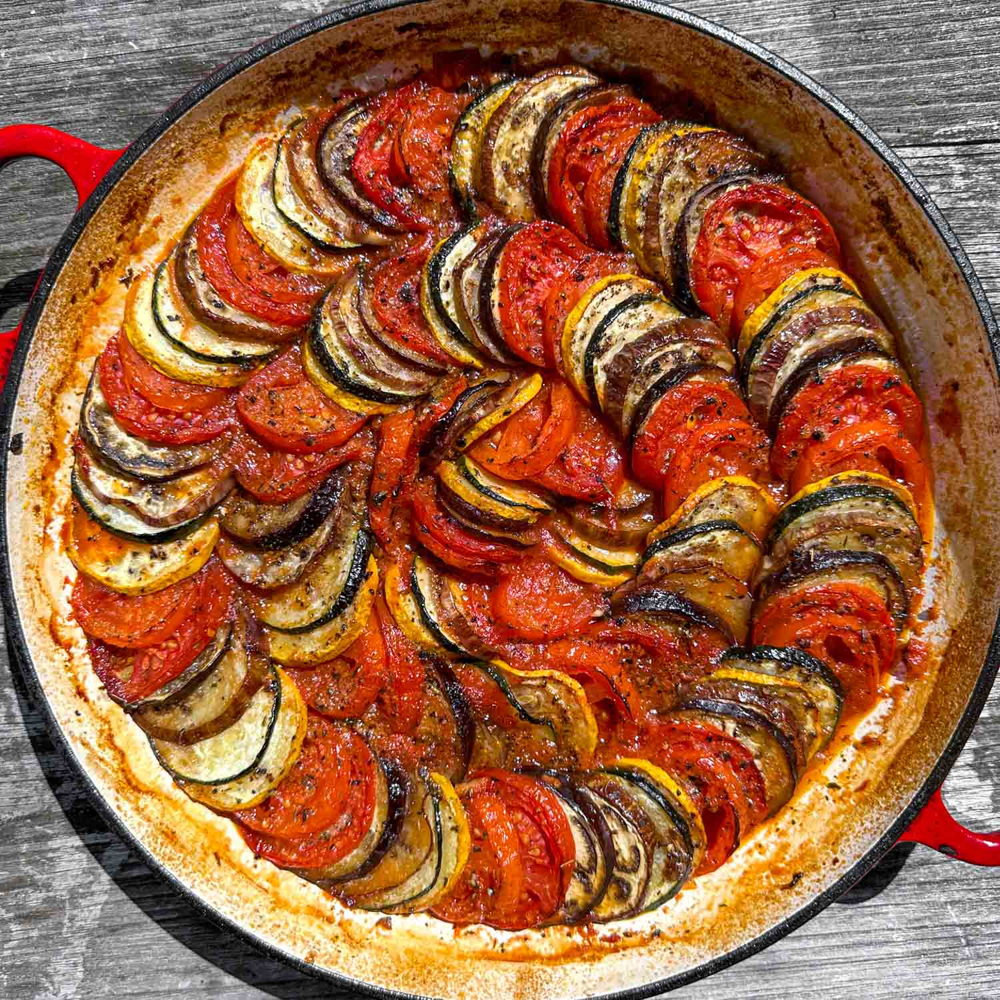
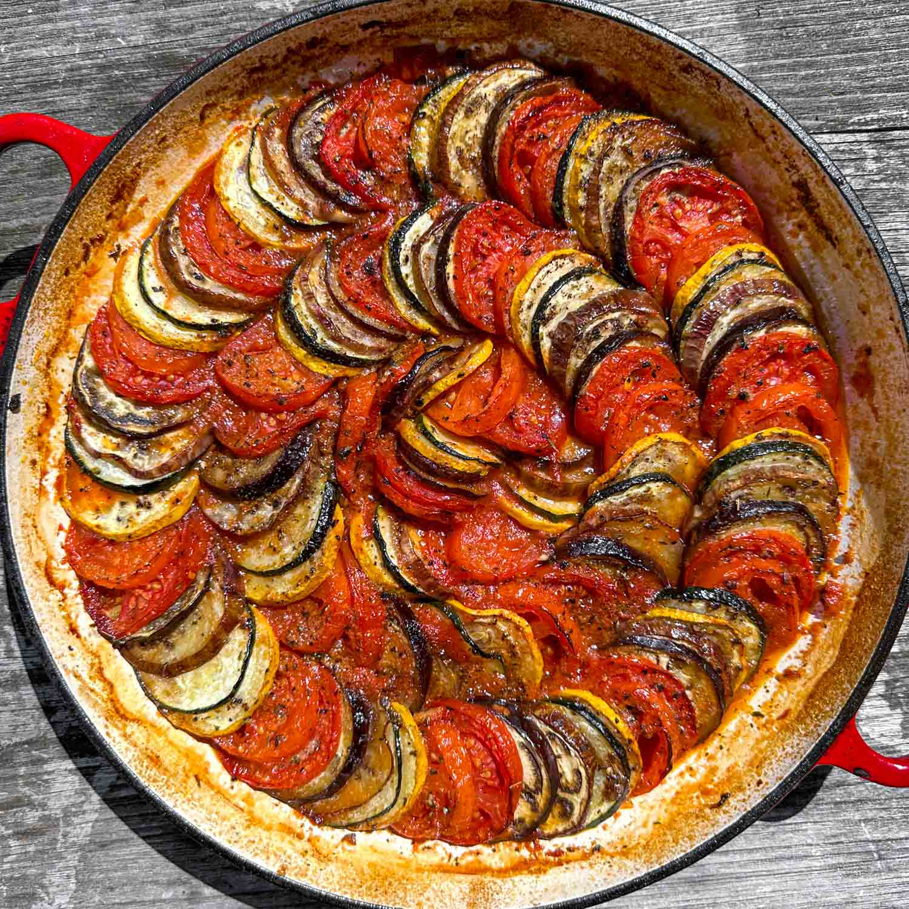

Back to homepage
Things you can do in Paris, France
Written by Allison Burgers Jr.
Paris is the capital of France, known for its rich culture and history. Often called the "City of Light," it features beautiful architecture and a vibrant atmosphere. Visitors can admire the iconic Eiffel Tower and explore the world-famous Louvre Museum. With its delicious food and artistic experiences, Paris offers something special for everyone who visits.
Visit world-famous buildings from Paris!

The Eiffel Tower is an iconic symbol of Paris and one of the most recognizable structures in the world. Standing at 1,083 feet tall, it was completed in 1889. Visitors can take elevators or climb stairs to enjoy stunning views of the city from its observation decks.

The Louvre is the largest art museum in the world, located in Paris, France. It is home to thousands of works of art, including the famous painting Mona Lisa by Leonardo da Vinci. With its stunning glass pyramid entrance and vast collection, the Louvre attracts millions of visitors each year, offering a glimpse into art and history from various cultures and time periods.
Want a bit more fun other than exploring famous buildings? That's not a problem here!
Out of all the 6 Disneyland locations, Paris has one of them! Whether you have children, or just enjoy the fun and excitement at Disneyland, everyone is welcome!
Enjoy delicious French cuisine
France is famous for its delicious foods, from the crusty baguette and buttery croissant to sweet macarons and crème brûlée. Dishes like ratatouille highlight French flavors, using simple, fresh ingredients. These foods show the heart of French cuisine and are loved worldwide.
Explore the depths of The Catacombs of Paris if you dare!
The Catacombs of Paris are an underground burial site that holds the remains of about six million people. Created in the late 18th century to solve the problem of overflowing cemeteries, these dark tunnels stretch beneath the city. Visitors can enter through a portal that reads "Stop! This is the empire of death" and explore the eerie arrangements of bones along the walls. The catacombs offer a unique look at Paris's history and the lives of those buried there.
Sail through the beauty of Paris with the Seine River!
The Seine River flows through Paris, offering beautiful views of iconic landmarks. Its banks are lined with charming paths and lovely bridges, making it a popular spot for walks and relaxation. Visitors can take boat cruises to see sights like the Eiffel Tower and Notre-Dame Cathedral from the water. The river's rich history has inspired many artists, making the city more interesting.

That's all for this travel blog! I hope you enjoyed exploring the beauty and history of Paris with me. Whether you’re planning a visit or just dreaming of the city, there’s so much to discover. Safe travels, and see you in the next adventure!
Back to homepage


 
